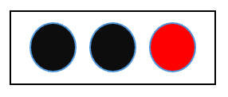

Le neurone artificiel : une fonction, pas un organe
Pourquoi "neurone"
Dans un neurone biologique, si le cumul des stimulations
reçues dépasse un certain niveau, il excite son axone.
Ce comportement à effet de seuil est apparu comme simple
à simuler.
On a cru que l'intelligence émergerait du nombre de connexions.

Représentation d'un neurone biologique
Le neurone artificiel est un calcul
Un neurone artificiel cherche à reproduire cette logique par des opérations simples.
Il associe à chaque entrée un poids lui fixant son importance
dans la décision commune.
Par des multiplications et une sommation, il va produire un
score brut.
Ce score brut est traduit en
prédiction par une
fonction d'activation
Le perceptron est comme le neurone d'origine: Il s'active sur un dépassement de seuil (ou échelon).

Schéma d'un neurone artificiel à deux entrées
Le score brut est un calcul simple : somme(xi.wi) + biais. Ci-dessus w1·x1 + w2·x2 + b
Avec deux entrées x1,x2, c' est l'équation d'une droite dans le plan, décalée de l'origine par le biais b.
La droite est une frontière qui sépare les scores bruts positifs des négatifs.
Représentation géométrique du score brut d'un neurone artificiel

Les poids w1,w2 conditionnent la pente de la droite, et le biais son décalage de l'origine.
Les scores bruts montrent la distance, positive ou négative, d'un point à la frontière de
décision.
Tout neurone artificiel découpe son espace de nombres en deux parties.
- Avec deux entrées il sépare le plan (x1,x2) en deux parties par une droite.
- Avec trois entrées, il séparera l'espace en deux parties par un plan.
- Avec n entrées, il séparera un hyperespace en deux parties par un hyperplan.
La fonction d'activation crée la prédiction
La fonction d'activation f transforme le score brut en une prédiction.
Celle du perceptron historique est la fonction échelon H (Heaviside step function du nom de son inventeur).
- La prédiction est 1 (vrai) si le score brut est supérieur ou égal à 0
- La prédiction est 0 (faux) s'il est inférieur

Le perceptron historique est un classifieur binaire.
Classifieur binaire
La fonction d'activation échelon crée des classifieurs binaires, tout ou rien, vrai ou faux.
Au final, de nombreuses demandes sont binaires:
- Filtrage de spam (un message est-il spam ou non)
- Détection de fraude bancaire (transaction frauduleuse ou légitime)
- Diagnostic médical (présence ou absence d'un marqueur de maladie)
- Analyse de sentiment (avis positif ou négatif)
- etc.
Classification multiple
Si on a plusieurs catégories à isoler on entraîne N classifieurs, un par classe.
Si les catégories sont exclusives One-vs-all (OvA) il faut veiller à ce qu'une seule
sortie soit positive.
🟡 Un exemple simplifié: un feu tricolore, deux interrupteurs
Le perceptron est le premier et le plus simple des neurones artificiels, mais il est suffisant pour en illustrer le fonctionnement.
On imagine n'avoir que deux interrupteurs pour allumer distinctment chacun des trois feux.Du code simplissime pourrait le faire. L'ambition est d'utiliser des perceptrons pour en comprendre le fonctionnement.
Encodage des deux entrées et des trois sorties:
-
On prend arbitrairement comme convention qu'un interrupteur fermé a la valeur 1 et un
interrupteur ouvert la valeur 0.
- On considère qu'une prise est alimentée si sa valeur est 1 et hors tension si elle vaut 0.
Le jeu de données et de test
Il définit le comportement attendu du réseau de neurones.| Interrupteurs | sortie visuelle | sortie numérique |
|---|---|---|
| 0 0 ouvert ouvert |

|
0 0 0 |
| 0 1ouvert fermé |

|
1 0 0 |
| 1 0 fermé ouvert |

|
0 1 0 |
| 1 1 fermé fermé |
 |
0 0 1 |
On a un système déterministe élémentaire avec 4 cas à superviser.
Simplissime, on peut entraîner un réseau soi-même.
Un neurone par feu
Un neurone n'ayant qu'une sortie. Il faut un réseau de 3 neurones distincts.

Représentation du réseau avec 3 neurones perceptrons en parallèle
Chacun multiplie les mêmes entrées mais avec ses propres poids.
La couche de sortie doit allumer un seul feu à la fois.
La taille d'un modèle
Le modèle est le tableau numérique des paramètres une fois le
réseau entraîné. Sa taille est son nombre de paramètres.
Notre réseau a 1 couche (de sortie) et 3 neurones avec 3
paramètres chacun. C'est un modèle à 9 paramètres.
Les réseaux pour la reconnaissance d'images ont des millions (106)
de paramètres et des dizaines de couches.
Les grands LLM (Large Language Model) qui répondent aux questions en ont des
milliers de milliards (1012) avec des centaines de couches.
Le fonctionnement de base reste le même que ce soit pour 10, 106 ou
1012 paramètres, mais la puissance de calcul à mobiliser est exponentielle.
Expérimenter ce réseau
On peut entrainer soi-même ce modèle en modifiant ses poids par petits pas comme le fait un apprentissage automatique.
La matrice des poids est initialisée au hasard, à vous de corriger par étapes pour réduire l'erreur de prédiction.
En deux dimensions, vous pourrez voir les droites à orienter (changer les poids) afin d'isoler chaque feu indépendamment.
Sauter l'expérience et aller au chapitre 2
Surtout si vous avez déjà fait et réussi le test.